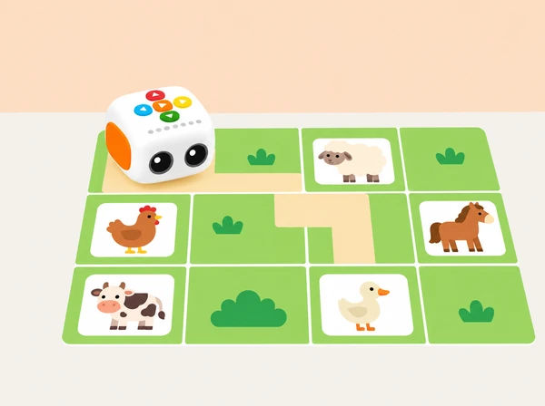

Com podem preparar un mapa amb files, columnes i una orientació inicial perquè Tale-Bot trobe cinc animals amb ordres cap avant que puguem comptar i comprovar?
L’alumnat crea un mapa propi d’un corral o d’un paisatge agrari valencià; pot situar-hi animals de granja o fauna triada amb una font local fiable. Abans de programar, identifica files i columnes, estima caselles i representa cada ordre amb una targeta. La lliçó oficial treballa un mapa preparat, la instrucció cap avant i la verificació del programa; ací canviem mapa, imatges, espècies i fitxa de treball.
Prepareu una graella plana, fletxes de paper, cinc targetes grans d’animals i una marca d’inici amb una fletxa que indique cap on mira el robot. Ajusteu la mida de casella al Tale-Bot físic: el desplaçament predeterminat és d’uns 10 cm, i el manual permet establir 15 cm; comproveu-ho al tutorial Primeres passes amb Tale-Bot Pro abans de dibuixar la quadrícula. Per a practicar només ordres cap avant, situeu cada animal en el corredor que queda davant del robot, reorientant-lo en reiniciar cada repte.
La lliçó pública de Matatalab organitza aproximadament 10 minuts de presentació guiada, 30 de pràctica en parelles i 5 de retorn. Aquesta adaptació la distribueix en tres trobades breus per poder construir el mapa, fer cinc intents amb calma i revisar els errors sense pressa. Si es disposa d'una sessió llarga, es pot mantindre la mateixa seqüència amb una pausa entre la pràctica guiada i els intents autònoms.
En la primera trobada, modeleu només una ruta, amb l'inici i l'orientació assenyalats. En la segona, doneu temps per a les cinc metes: abans de cada prova, l'equip anuncia files/columnes, recompte de caselles i nombre d'ordres; després, un company verifica els indicadors de codificació del robot. En la tercera, compareu les seqüències en una tira comuna i trieu-ne una per depurar. No reprogramar la ruta sencera quan una ordre falla ajuda a mantindre el focus en el pas que cal revisar.
El pas de 10 cm és la configuració predeterminada descrita al manual; la targeta de configuració permet una opció de 15 cm en el model corresponent. Per tant, la quadrícula local ha d'usar la mesura activa al robot concret. Si una casella no coincideix exactament, marqueu el mapa com a model aproximat i feu una prova d'alineament abans de col·locar les metes.
Observeu si cada infant pot reconèixer files i columnes, descriure una casella o coordenada, orientar el robot, comptar caselles, traduir el recompte en ordres cap avant, comparar l’extensió de programes i usar els indicadors com a comprovació visual. Arxiveu el mapa, la seqüència, la predicció, el resultat i la revisió d’un error. Valoreu que l’alumnat puga explicar com ha sabut quina ordre canviar, no la velocitat.
Reduïu la graella a poques caselles, marqueu el nord del recorregut o oferiu fletxes amb relleu. Es pot assenyalar la destinació, dictar el programa, moure una fitxa que represente Tale-Bot o observar i registrar-ne el recorregut.
Adapta la segona lliçó del primer nivell de Tale-Bot Pro, «On són els animals de la granja?». La pàgina i el PDF adjunt especifiquen introducció a animals, recompte de files i columnes, marca d’inici orientada, metes identificades al mapa, seqüències amb ordres cap avant, comprovació per indicadors lluminosos, recollida de cinc animals i comparació de quina ruta en requereix més o menys. La fitxa pròpia conserva aquests aprenentatges i els trasllada a una quadrícula i targetes originals; no reutilitza la presentació, el full de treball, les imatges ni el mapa del fabricant.